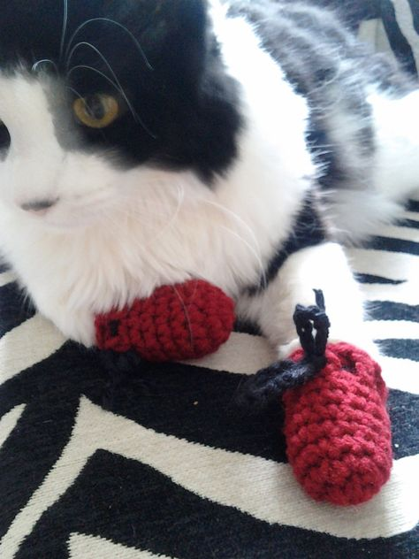
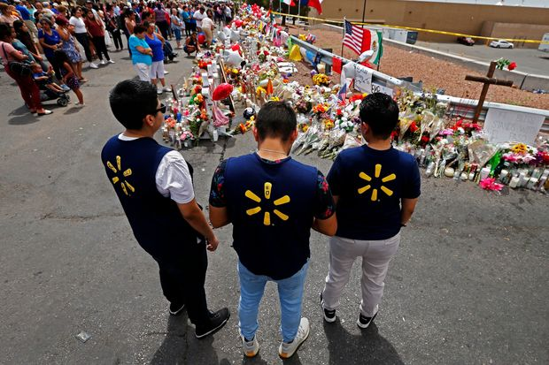
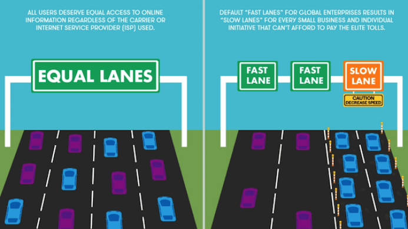

The internet is a wonderful place. An infinite source of cute kittens with mittens (I literally just made that up, looked it up, and sure enough they exist! Yay!) and a wholesome memes. However, as free as the internet is, there exists certain dark corners that provide a platform for hate. 8chan is one such platform, that we discussed a lot in class and in the readings. What should be the stance (if any) on hosts for such websites, and what should be the stance (if any) of internet service providers, and should we push for more online censorship.
When thinking about these questions, the first thing I think of is: what are the implications? What are the implications of curving free speech on the web? Of removing net neutrality and handing over more control of web content and traffic to ISPs? It is scary to think of the impact of such actions, but the truth is, in the United States, using the data from The Gun Violence Archive data from Pew about 373 people died in mass shootings in 2018. Although this is a small percentage of gun deaths in U.S., it is significant because the internet has shown to play a significant role in these shootings. A lot of them are hinted to by the shooter and even expressed explicitly by some in “manifestos” in websites like 8chan. What is important is that if there had been proper monitoring of hate speech on sites like these (or even complete take-down of hate speech only sites) shootings could have been prevented or even stopped from being an “inspiration” to other shooters.
Because of this I firmly believe that the websites should have the absolute right to regulate hate speech on their site. I realize this might be controversial given the fact that it is regulating free speech online. However, the role the internet has played in perpetuating hate and (even worse) violent action on such thoughts, is incredibly sad. In this respect I believe the onus is on us as consumers and company owners to look into our hearts and feel responsibility for what hate we let circulate our timeline and our websites in the case of owners.
 Walmart employees mourn victims of El Paso shooting. The shooting was announced on 8chan before it happened.On the other hand, I do not believe that the repeal of net neutrality is as good as the pro-big company proponents make it seem. One thing is websites having the moral responsibility to monitor what is spread on their site (regarding hate-speech) but another very different thing is to allow the ISPs to dictate how fast or slow your connection should be and what the price is for bigger bandwidth for them, affecting smaller companies that cannot afford a higher rate for privileged bandwidth.
 Common way to explain what could happen with the repeal of net neutrality. Source.